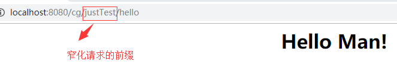
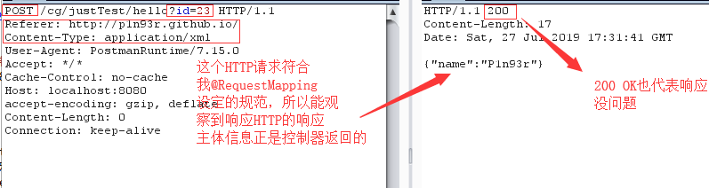
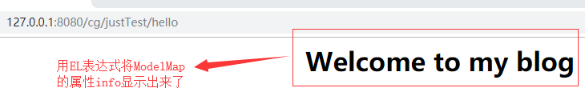
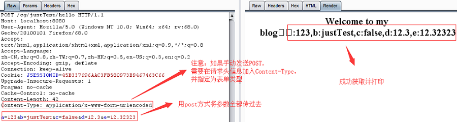
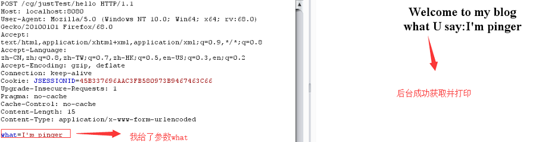
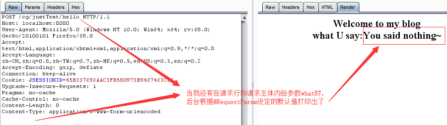
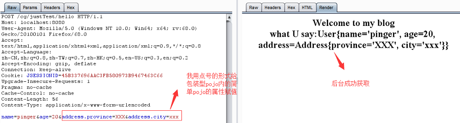
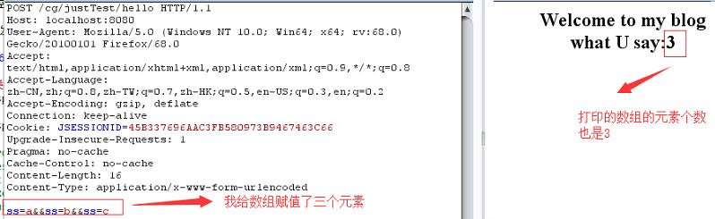

之前的一篇博文：SpringMVC之处理器映射器中最后的注解式处理器映射器讲了如何使用最基础的注解开发，现在下面将讨论注解开发中的一些常见要点。
通过之前的利用注解方式配置映射器和适配器，对于控制器中标记有@RequestMapping的方法，我们可以通过@RequestMapping设定的url访问到此方法，其实 @RequestMapping也可以作用于类上，而不仅仅是作用于方法上 。作用于类上可以窄化请求映射。注解式开发的控制器都是基于方法的，我们往往把一个模块的控制器都放在一个类里，如果此时用@RequestMapping标记类，窄化此模块的请求，可以很好的起到逻辑上的模块划分的作用。假设我做一个手商城，有一个商品模块，那么是不是可以有商品添加，商品删除，商品修改等等此模块下的控制器，这些控制器放在一个类里，然后我在类前用@RequestMapping("/item")标记，然后假设我的商品添加控制器的标记为@RequestMapping("/addItem")，那么如果我要访问商品添加的控制器，访问的相对url为：/item/addItem，此类里的每个控制器都要加上/item前缀,此所谓窄化了请求。为啥要窄化请求，我认为是可以在逻辑上合理划分模块，一旦控制器多了，有个代表模块的前缀将会使得项目更加合理。参考实例如下：
@Controller
@RequestMapping("justTest")
public class TestController{
@RequestMapping("/hello")
public ModelAndView sayHello(){
ModelAndView modelAndView=new ModelAndView("hello");
modelAndView.addObject("info","Hello Man!");
return modelAndView;
}
}访问测试结果如下：

@RequestMapping的另一个要点就是 请求限制 ，可以规定请求的方式为GET或者POST等等，可以规定请求的提交内容的类型（json等），等等。具体的属性如下表：
| 属性值 | 作用 |
|---|---|
| value | 例如 @RequestMapping(value="/test")，其实这等价于 @RequestMapping("/test") |
| method | 指定请求控制器的方式，有GET，POST，DELETE等。例如：@RequestMapping(value = "/test",method = RequestMethod.POST)就是指定只处理POST类型的请求 |
| consumes | 规定请求的提交内容的类型，比如我只接受json类型数据的请求，那么我可以设置成： @RequestMapping(value = "/test",consumes = "application/json") |
| produces | 规定返回的内容的类型，比如我返回xml类型的数据，那么我可以设置成： @RequestMapping(value = "/test",produces = "application/json") |
| params | 规定请求所必需的带的参数，可以进一步过滤掉无关请求 |
| headers | 规定请求必须带的HTTP头信息 |
为了测试以上参数，我写的一个控制器如下：
package com.test.ssm.web.controller;
import org.springframework.stereotype.Controller;
import org.springframework.web.bind.annotation.RequestMapping;
import org.springframework.web.bind.annotation.RequestMethod;
import javax.servlet.http.HttpServletRequest;
import javax.servlet.http.HttpServletResponse;
import java.io.IOException;
import java.io.PrintWriter;
@Controller
@RequestMapping("justTest")
public class TestController{
@RequestMapping(
value="/hello",
params = "id",
headers = "Referer=http://p1n93r.github.io/",
consumes="application/XML",
produces = "application/JSON",
method = RequestMethod.POST
)
public void sayHello(HttpServletRequest request, HttpServletResponse response){
System.out.println("成功访问到控制器");
try {
PrintWriter out=response.getWriter();
out.write("{\"name\":\"P1n93r\"}");
} catch (IOException e) {
e.printStackTrace();
}
}
} 可以看出，我要求请求带个参数id，并且规定请求头要有Referer=http://p1n93r.github.io/（Referer头一般用来作为网站的同源策略的实现），还规定发送请求的内容类型为xml，还得是POST请求，我返回的内容类型为json类型。然后我用burpsuit发送一个符合规定的HTTP请求，如下图所示：

Notice：虽然我用的POST提交，但是我把请求参数id写在了请求行，还是能被后台识别。
注解式控制器的返回值主要有三类：
setViewName() 方法来设置返回的逻辑视图名addObject() 方法来填充数据forward: 打头意思是转发到冒号后面表示的逻辑视图。redirect 打头意思是重定向到冒号后面表示的逻辑视图。所谓的参数绑定就是在HandlerAdapter执行Handler之前，会将HTTP请求的键值对数据绑定在Handler的方法的形参上。用于前后端数据交互。
参数绑定支持一些默认的参数类型：HttpServletResponse、HttpServletRequest、HttpSession以及Model/MdelMap。
以上默认支持的参数类型，处理器适配器会默认识别并进行赋值。这些除了Model和ModelMap，其实学习javaWeb基础课程时应当是能非常熟练运用了，那就不提了。主要探讨Model/ModelMap的用法，ModelMap是Model接口的实现类，如果我们直接使用Model，SpringMVC会自动实例化ModelMap。ModelMap主要是用于填充数据给前台显示。比如以下的例子，我调用ModelMap的方法 addAtrribute() 来填充数据，前台用EL表达式获取。参考代码如下：
@Controller
@RequestMapping("justTest")
public class TestController{
@RequestMapping(value="/hello")
public String sayHello(Model model){
model.addAttribute("info","Welcome to my blog");
return "hello";
}
} hello视图的关键代码为： <h1>${requestScope.info}</h1> ,访问测试结果如下：

接下来讨论几种常见的参数绑定场景：
首先说下有哪些简单类型：整形，字符串，布尔型，浮点型。当控制器的形参为这些类型时，如果请求所带的参数名称和控制器的形参名一致时，会将请求参数与形参绑定。一个简单地示例如下：
控制器代码如下：
@Controller
@RequestMapping("justTest")
public class TestController{
@RequestMapping(value="/hello")
public String sayHello(Model model,Integer a,String b,Boolean c,Float d,Double e){
model.addAttribute("info","Welcome to my blog"+"，a:"+a+",b:"+b+",c:"+c+",d:"+d+",e:"+e);
return "hello";
}
}测试请求及其结果如下：

我们可以用@RequestParam的value属性来映射请求参数，其value为啥，请求发送的参数就得是啥。此外，可以用required属性设定请求发送的参数是否必须有，注意： 如果设定required为false，请求没发送这个参数，那么@RequestParam对应的类型必须为包装类型，否则将报错。 因为请求没给参数，那么将会给形参赋值为null嘛，int那些简单类型是不能为null的。最后我们可以用defaultValue设定每给参数时的默认值。代码参考如下：
@Controller
@RequestMapping("justTest")
public class TestController{
@RequestMapping(value="/hello")
public String sayHello(Model model,
@RequestParam(value = "what",required = false,defaultValue = "You said nothing~")String w){
model.addAttribute("info","Welcome to my blog"+"<br/>what U say:"+w);
return "hello";
}
}测试请求及其结果如下：
 
pojo类型的参数绑定则分为简单pojo和包装型pojo的参数绑定。这里我举例包装型pojo的参数绑定。pojo的代码如下：
Address类代码：
package com.test.ssm.pojo;
public class Address {
private String province;
private String city;
//getter and setter
public String getCity() {
return city;
}
public void setCity(String city) {
this.city = city;
}
public String getProvince() {
return province;
}
public void setProvince(String province) {
this.province = province;
}
@Override
public String toString() {
return "Address{" +
"province='" + province + '\'' +
", city='" + city + '\'' +
'}';
}
}User类代码：
package com.test.ssm.pojo;
public class User {
private String name;
private int age;
private Address address;
//getter and setter
public String getName() {
return name;
}
public void setName(String name) {
this.name = name;
}
public int getAge() {
return age;
}
public void setAge(int age) {
this.age = age;
}
public Address getAddress() {
return address;
}
public void setAddress(Address address) {
this.address = address;
}
@Override
public String toString() {
return "User{" +
"name='" + name + '\'' +
", age=" + age +
", address=" + address +
'}';
}
}可以看到User类是一个包装的pojo，组合了Address。继续看控制器代码：
@Controller
@RequestMapping("justTest")
public class TestController{
@RequestMapping(value="/hello")
public String sayHello(Model model, User user){
model.addAttribute("info","Welcome to my blog"+"<br/>what U say:"+user);
return "hello";
}
}可以看到，控制器的形参是一个包装类pojo，那么如何参数绑定呢，其实就是发送的请求的参数需要和pojo的属性一致就行了，对于包装型pojo内的简单pojo类型的属性，假设包装型pojo内的简单pojo属性为a，a又有属性b和c，那么请求发送的参数就需要为： a.b=xx&a.c=XX 这种形式。根据上面的举例，列出请求测试及其结果：

集合类主要讨论字符数组，List以及Map。
对于字符数组，给出例子如下：
@Controller
@RequestMapping("justTest")
public class TestController{
@RequestMapping(value="/hello")
public String sayHello(Model model,String[] ss){
model.addAttribute("info","Welcome to my blog"+"<br/>what U say:"+ss.length);
return "hello";
}
}发送的请求的参数就是n个ss，例如下图所示：

对于List，SpringMVC不能接受前台的数组，所以只能把List封装到一个自定义pojo类对象里（假设被封装的List对象为a，a内的元素类型统一且有属性b和c），然后请求的参数利用a[0].b=xx这种形式来绑定参数。对于Map而言，也是类似，只不过方括号[]内的就不是索引号，而是Map的键名。
关于注解开发，后面还有验证器，异常处理，文件上传，json数据交互等等重点=-=（好多哇。。。）